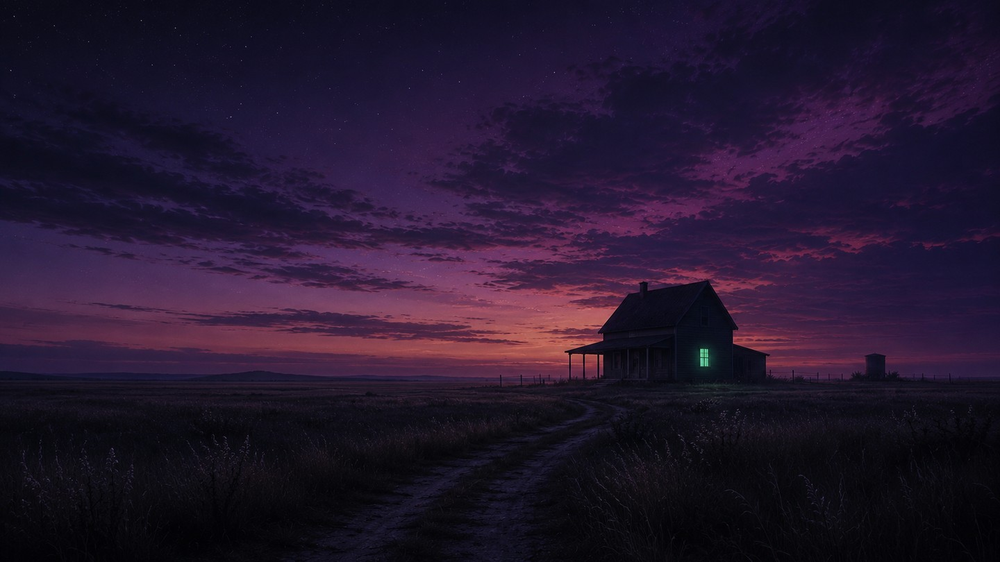
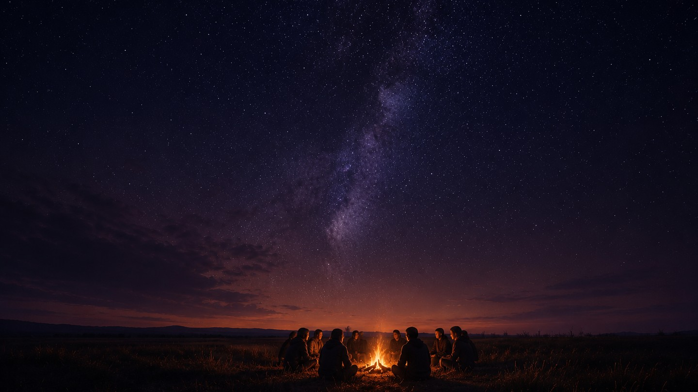
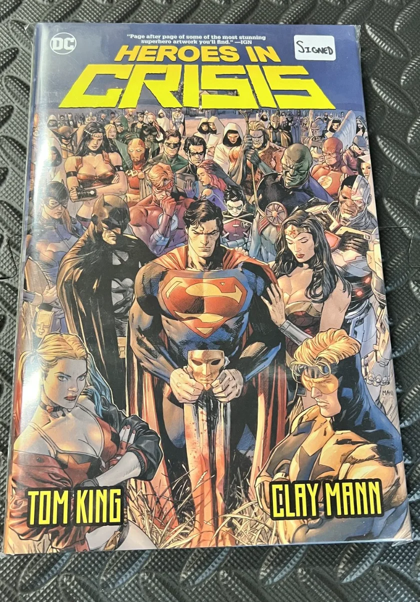
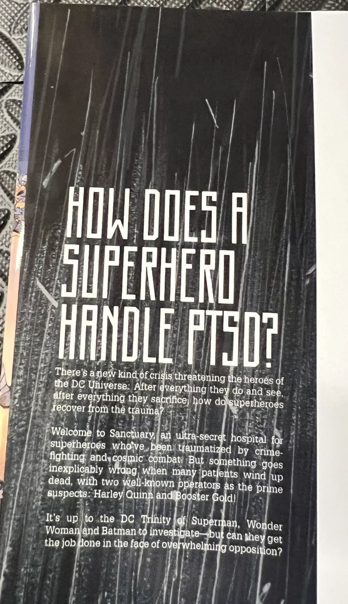
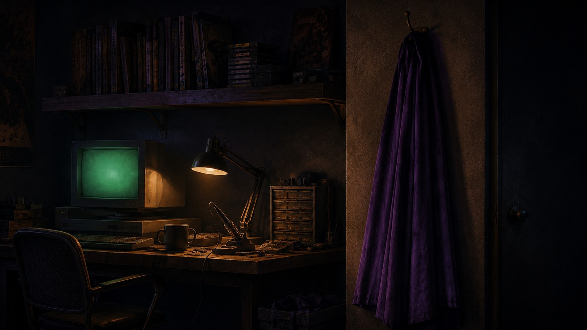

AI just handed all of us superpowers. Nobody handed us a new body to go with them.

The cape is new. The pilot isn’t.
One recent evening, an AI and I rebuilt a big chunk of this site between dinner and bedtime. The AI did the heavy lifting. My job was direction, review, and the final yes on every change. That’s how most things here get built now.
That’s a superpower, and I don’t mean that as a metaphor. One person can now do the work of a small team, on demand, for the price of a streaming subscription. And it isn’t just people in tech. Writers, analysts, medics, mechanics and teachers are all getting capes right now.
Here’s the part the origin story skips. The cape is brand new. The person wearing it is not.
Our brains and nervous systems were built for small groups of familiar faces and threats you could see coming. They haven’t had an upgrade since. A paper published in April 2026 in Behavioral Sciences argues that modern life has outrun that design: huge networks, always connected, always measuring ourselves against strangers. AI is on their list of pressures too. The same wave handing out the capes is adding to the load.
It’s a new hypothesis, so I hold it loosely. But I believe the authors’ conclusion completely. They don’t say roll the technology back. They say design our lives, physical and digital, to work with human nature instead of against it.
In other words, rest isn’t a perk. It’s a design requirement.

Even the strongest heroes need somewhere to put it down
Comics got there first. Or at least one writer did.
Tom King (opens in a new tab) spent years as a CIA counterterrorism officer before he ever wrote a superhero. His heroes are the most powerful beings in their world, and the most human: tired, haunted, trying to hold a normal life together between disasters. Talking about where his series Heroes in Crisis came from, he said it plainly: “The first thing I did when I broke was hide it.”
In that book, Superman, Batman and Wonder Woman build Sanctuary: a hidden trauma-recovery center disguised as a farmhouse in Nebraska, where heroes can go to fall apart in private. Think about that. The three most capable beings on the planet looked at everything they could build, and decided what was missing was a place to put the weight down.
And the place is run by an AI. Machines keeping confidence for people who finally admitted they needed help. (The story turns when someone breaks into that AI’s confidential records. Even in fiction, the most dangerous thing in the building is the database of human vulnerability. The security architect in me felt that one.)
This one came off my own shelf, signed.


Heroes in Crisis, cover and jacket flap. Tom King, writer. Clay Mann, artist. © DC Comics.
The weight you carry quietly
King has talked about being 23 at the CIA, believing the invasion of Iraq was a mistake, and going anyway, because the job in front of him was stopping attacks that would kill people. Whatever you think of that war, that isn’t the point here. The point is the weight. A duty can be heavier than your opinion of the policy behind it, and you carry it anyway, mostly in silence.
I know that weight from the uniformed side. I finished Army training on the morning of September 11, 2001. The date is printed on my certificate. What followed was Bosnia, then the Middle East, including Iraq. What you think about a policy doesn’t get a vote in whether you go. The people next to you are going. So you go, you do the job, and making sense of it becomes homework you assign yourself for later. Sometimes decades later.
That homework is exactly what Sanctuary is for. King didn’t invent superhero trauma. He just gave it a building.
Rest is operational
From enlisting at 17 to retiring as a Major in Military Intelligence in 2024, the Army kept teaching me something my civilian calendar keeps forgetting: rest is part of the mission. You write sleep plans into an operation because exhausted soldiers make fatal mistakes. No commander ever called the sleep plan a perk.
Cybersecurity taught me the same thing about machines. No system I’ve secured runs at 100 percent on purpose. We rate-limit. We schedule maintenance windows. We throttle a hot CPU before it cooks itself, and nobody accuses the CPU of quiet quitting.
Then we sit down at the keyboard and run the one legacy system we can never patch, never replace and never restore from backup, at redline, every day. And we call it drive.
Even King still runs hot. He has said he writes until 3 a.m., and that his old sleep-deprivation training taught him one thing: “You go insane.” Knowing you need rest isn’t the same as taking it. That’s why mine is written down.
My protocol
Written down mostly so I have to keep it:
- The AI does the heavy lifting. I direct, review and approve. The final gate stays human.
- Some evenings the laptop closes and the workbench opens. A soldering iron can’t ping me.
- Comics get read on paper, slowly, the way the dime store intended.
- Walks happen with nothing in my ears.
- Sleep gets planned like the mission depends on it, because the mission is long and it does.
None of that slows the building down. It’s what makes the building last.
The den
This site is called a den on purpose. A den is where an animal goes to stop being hunted, and where a kid goes to read comics on the floor. Mine is both. It’s where I write these, bring old hardware back to life, and let an AI hand me superpowers a few hours at a time, with a human in command and an approval gate on every push.

The future I’m building toward isn’t people working like robots next to robots working like gods. It’s people wearing capes who also know exactly where their sanctuary is.
Hang yours up tonight. The world will still need saving in the morning.
Further reading: ScienceAlert on the evolutionary mismatch research (opens in a new tab), and the paper itself (opens in a new tab) in Behavioral Sciences; DC’s introduction to Sanctuary (opens in a new tab); the series on League of Comic Geeks (opens in a new tab); Tom King on the origins of Heroes in Crisis at SDCC, via Newsweek (opens in a new tab), and on Lanterns, the CIA and sleep, via Variety (opens in a new tab). If this one landed for you, King and Mitch Gerads’ Mister Miracle is the same idea at home scale (a hero holding his family together while the sky burns), and their The Sheriff of Babylon (opens in a new tab) takes on the Iraq war directly.
Next dispatch: The Multiverse Is a System Architecture, Complete with a Control Plane
Want to talk? Find me on LinkedIn (opens in a new tab).